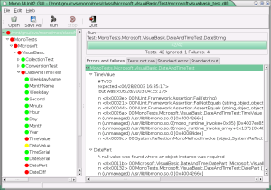

NUnit
Contents
- Introduction
- Install
- Commandline options
- NUnit-gtk
- Code sample
- Links
- Credits
Introduction
NUnit is a unit-testing framework for all .Net languages. Initially
ported from JUnit, the current version, 2.0 is the second major
release of this xUnit based unit testing tool for Microsoft .NET.
It is written entirely in C# and has been completely redesigned to
take advantage of many .NET language features, for example custom
attributes and other reflection related capabilities. NUnit brings
xUnit to all .NET languages.
Install
NUnit is distributed with mono, therefore you are able to use
the NUnit framework right away.
Commandline options
Content copied from nunit.org
Forms Interface
The forms interface has two command line options. If the program is
started without any command line parameters it automatically loads
the most recently loaded assembly. It does not automatically run it
just loads the assembly. The forms interface also keeps track of
the 5 most recently loaded assemblies. To access these see the
File->Recent Assemblies menu item.
The other option is to specify the assembly on the command line.
The following will start the forms interface with the assembly:
nunit.tests.dll
nunit-gui.exe /assembly:nunit.tests.dll
Console Interface
The console interface has a few additional options compared to the
forms interface. The console program must always specify a command
line parameter. The console interface always creates an XML
representation of the test results. This file by default is called
TestResult.xml and is
placed in the working directory.
Note: By default the nunit-console program is not added to
your path. You must do this manually if this is the desired
behavior.
Specifying an Assembly
The console program must always have an assembly specified. To run
the tests contained in the
nunit.tests.dll use
the following command:
nunit-console /assembly:nunit.tests.dll
Specifying an Assembly and a Fixture
When specifying a a fixture, you must give the full name of the
test fixture along with the containing assembly. For example, to
run the NUnit.Tests.AssertionTests in the
nunit.tests.dll assembly use the following
command:
nunit-console /fixture:NUnit.Tests.AssertionTests
/assembly:nunit.tests.dll
Specifying the XML file name
As stated above, the console program always creates an XML
representation of the test results. To change the name to
"console-test.xml" use the following command line
option:
nunit-console /assembly:nunit.tests.dll
/xml:console-test.xml
Specifying the Transform file
The console interface uses XSLT to transform the test results from
the XML file to what is printed to the screen when the program
executes. The console interface has a default transformation that
is part of the executable. To specify your own transformation named
"myTransform.xslt" use the following command line
option:
nunit-console /assembly:nunit.tests.dll
/transform:myTransform.xslt
Note: For additional information see the XML schema for the
test results. This file is in the same directory as the executable
and is called
Results.xsd.
The default transform
Summary.xslt
is located in the framework source directory.
NUnit-gtk
If you like a GUI version of a NUnit test runner, then NUnit-gtk might
be just what you are looking for.
Running NUnit tests for assembly Microsoft.VisualBasic:

Install
No releases of NUnit-gtk has been made yet.
To get the program, check it out from cvs, the module is called nunit-gtk.
Information on how to use the mono cvs repository are explained here.
Run
To run the program execute nunit-gtk.exe
Circles
The representation of the different collered circles:
Green: The test passed flawlessly
Red: The test failed
Yellow: The test did not run
There is a motto saying: Keep the bar green to keep the code clean ...
Code sample
using NUnit.Framework;
namespace NUnitTutorial {
[TestFixture]
public class MyUnitTest : Assertion {
string foo;
[SetUp]
public void GetReady()
{
foo = "Foobar";
}
[Test]
public void TestLength()
{
AssertEquals ("(1) Length", 6, foo.Length);
}
[TearDown]
public void Clear()
{
}
}
}
The code above shows the basic structure of a unit test.
First you will need to reference the framework:
using NUnit.Framework;
Then specify the test class:
[TestFixture]
public class MyUnitTest : Assertion {...}
It is not mandatory to inherit from Assertion, but if you do, the code becomes a little more clear and you will save some typing.
Assertion.AssertionEquals (...) vs AssertionEquals (...)
Initialize your variables
[SetUp]
public void GetReady() {...}
Write some tests
[Test]
public void TestLength() {...}
Tear it all down.
[TearDown]
public void Clear() {...}
To learn more about the Attributes and Assertion methods go read the documentation at
www.nunit.org
Links
Credits
Author: Johannes Roith
Author: Martin Willemoes Hansen